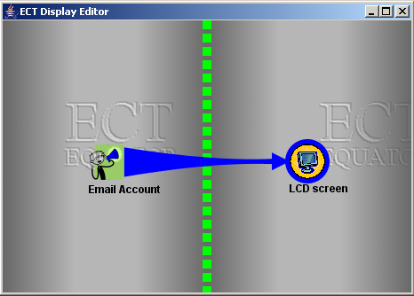
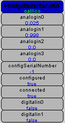
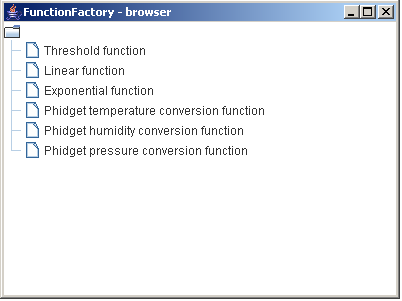
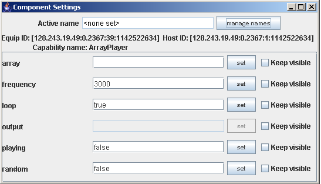
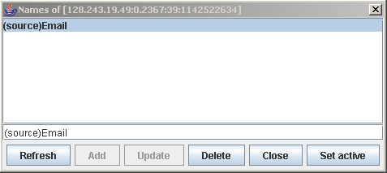
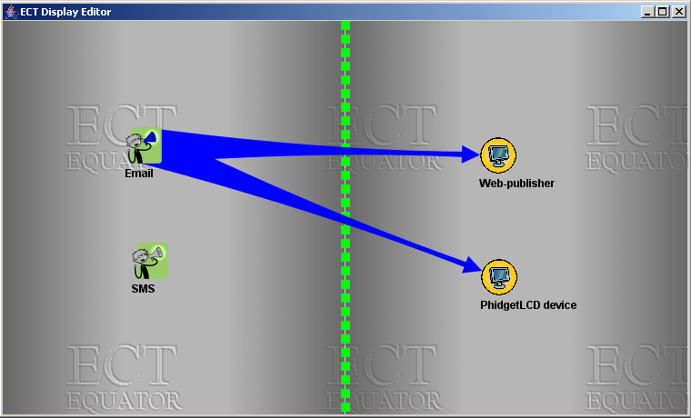
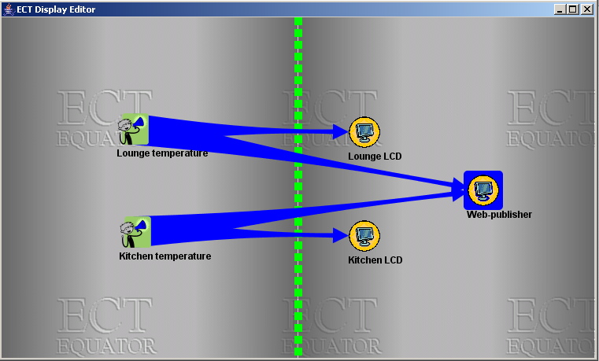
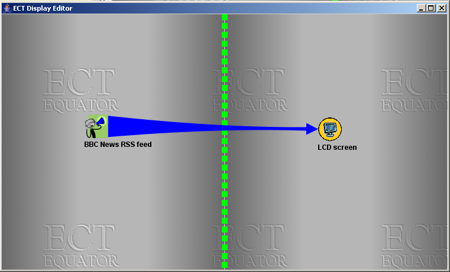

Using the display editor
Created by Stefan Rennick Egglestone 2006-02-15
Last updated by Stefan Rennick Egglestone 2006-06-29
Introduction
Using the display editor
The tutorial
The display editor is an
interface to ECT which has been designed to be as simple
as possible to use, and which has also been optimised
for use through a touchscreen. Figure 1 below
shows a screenshot of the display editor.

Figure 1
Each of the icons in figure 1 represents either
a source of data or a sink for data. Data sources
appear to the left of the green dividing line, and
data sinks to the right. In this case, the
only data source is an email account, and
the only data sink is an LCD screen. Blue links indicate
how data should flow between sources and sinks,
and in this case a link exists between a source
of emails and an LCD screen which can be used
to display them.
Note that in some cases, each icon will represent
a single ECT component, and a link will represent
a connection of one property on a source component
to one property of a sink component. However,
in other cases, data sources and sinks will
be composed of multiple ECT components. In all
cases, component have to be instantiated
through the graph editor,
as the display editor interface has been designed
to be as simple as possible, and does not include
component instantiation functionality. A detailed
tutorial
on how to use the graph editor in co-ordination
with the display editor is included below.
Also note that, because the component properties to which
a link can be connected cannot be defined in the display
editor, only those components for which it is unambiguous
as to which property should be used in a connection
can actually be used in this editor. In practice, there
are many ECT component for which this is the case.
A list of such components
can be found here.
Any pair of sources and sinks from this
list can be connected in the display editor,
but this does not mean that the resultant
installation will perform a sensible task. For example,
connecting a VideoProcessor component to a StringConcatenation
component is probably not a very useful thing to do!
The rest of this document presents a simple tutorial
on how to set up an ECT installation
that can be configured using the display editor. The tutorial:
- describes how to create a number of data sources and
sinks in the graph editor
- describes how to make these sources and sinks available
in the display editor
- describes how to use the display editor to configure
and reconfigure connections between sources and sinks
Instructions on how to construct the following types
of data source are given in this tutorial:
- email (allows a POP- or IMAP-enabled email account to be used as a data source)
- SMS (allows a GSM/GPRS modem to be used as a data source)
- RSS (allows an external RSS feed to be used as a data source)
- environmental information (allows a temperature/humidity/air pressure sensor
attached to a PhidgetInterfaceKit
device to be used as a source of environmental information)
The tutorial also includes instructions on how to construct
the following data sinks:
- lcd screen (allows a
PhidgetTextLCD device,
to be used as a data sink)
- web-publisher (publishes items of data using both an RSS feed
and a web-page)
With this particular set of sources and sinks, the data sources can
be thought of as producing messages (eg a new email message,
a message indicating the current temperature in a room)
and the data sinks can be thought of as displays for these messages
(eg the phidget lcd screen can be used to display a new email,
or the email can be "displayed" by publishing it on
a web-page or an RSS feed)
(Please note that this tutorial assumes familiarity with
the graph editor
and its use in requesting instances of components and
adding connections between component properties. Remember
that each of the components below will have documentation
that is viewable in the graph editor
(or on this website - eg see the
alphabetical components list)
which you should consult if you do not know how to use a component.)
Getting started
- Start the graph editor via
method 1.
- Note that you should read about
configuring ECT for web-caches/proxies
if your internet connection requires that you access the web
through a web-cache/proxy. This is because the RSS component
in ECT uses web technology
to fetch information from an RSS news feed.
Creating an email data source
- To create a simple email data source, just
instantiate the EmailReceiver component, and configure
it to connect to your POP or IMAP email account. Once
configured, you'll find that new emails that have been
sent to this account start appearing on the
EmailReceiver messages property.
- If you wish to create a filtered email data source
(for example, one that will monitor your email
account and only pass on emails from people
on a safe list) then, in addition to EmailReceiver,
you can use an instance
of EmailFilter to perform the filtering. Configure this component
as described in the documentation provided with
it, and connect the
EmailReceiver messages property to
the EmailFilter inputMessages property. Any emails
that are sent to your email account and which are passed
by the filter will appear on the EmailFilter
acceptedMessages property (any that don't pass will
appear on the rejectedMessages property).
Creating an SMS data source
- This can be done using the SMS component. Note that
it is only possible to have one instance of this component
running at once - so if you also want an SMS data sink
available at the same time, you must use the same instance
of the component for this.
- Make an instance of the SMS component, and configure
it to connect to your GSM/GPRS modem (see component
documentation for more details). Any SMS sent to the
SIM card plugged into the modem will start to appear
on the messages property of the SMS component.
- You can make a filtered SMS data source by attaching
the inputMessages property of
a correctly-configured instance of DictionaryFilter to
the messages property of your SMS component.
Creating an RSS data source
- If you wish to use a published RSS feed as a source
of data
(for example, the BBC News front page) then you can do
this using an instance of the RSSClient component, and an instance
of ArrayPlayer.
- Connect the messages property of the RSSClient
to array property of the ArrayPlayer,
and set the playing property of the ArrayPlayer
to true.
- provide the address of your RSS feed to the
url property of the RSSClient.
- Items of news information should start appearing
on the output property of ArrayPlayer.
Creating an environmental information data source
- This is a bit more complicated to the other data sources.
To actually gather environmental information, you'll need
a PhidgetInterfaceKit, along with either a temperature,
humidity or air pressure sensor
(see Phidgets Inc website
for ordering info)
- To turn this hardware into a data source, you'll need
instances of the following components: PhidgetInterfaceKit,
FunctionFactory and StringConcatenation.
- First, attach your sensor to your interface kit, connect
your interface kit to your computer, and configure
your PhidgetInterfaceKit component to communicate with it.
Once configured, this component will look like figure x below.
One of the properties labelled
analogin<x> will be providing data values from your sensor -
which one it is will depend upon which port on your PhidgetInterfaceKit
you have actually plugged your sensor into.

Figure x - configured PhigetInterfaceKit component
- Now make an instance of FunctionFactory, which should
cause a GUI to pop-up looking something like figure y
below

Figure 2 - FunctionFactory gui
- Right-clicking on, for example, the entry
labelled Phidget temperature conversion function
allows you to choose to make an instance of a component
that can convert the raw sensor value provided by
the PhidgetInterfaceKit component into a calibrated
environmental reading (eg it might convert 0.025
into 23C - for 23 centrigrade). This will conversion
component will appear under the name "Function component" in
the graph editor.
- Connect the correct analogin property of
your PhidgetInterfaceKit to the the input
property of the conversion component, and calibrated
data values will start appearing on its outputText
property.
- You can use an instance of the StringConcatenation
to convert this into a textual message. eg you might
convert "23C" into the message "The temperature in your
lounge is 23C" using this component.
Creating a PhidgetLCD data sink
- If you are in possession of a PhidgetTextLCD screen, then
you can use it to display items of data.
- Doing this requires two components - one of which is
used to extract information from data items, and one
of which is used to control the PhidgetLCD.
- The extraction operation is necessary as
PhidgetLCD screens only have two lines - so can only
present a portion of the data contained in a complex
message such as an email.
- Create an instance of the SmallDisplayStringExtractor
and PhidgetLCD components.
- Connect the lineOneText property of the
SmallDisplayStringExtractor to the lineOneText
property of the PhidgetLCD component, and do a similar
thing for the lineTwoText properties.
- Configure your PhidgetLCD component to cause it to connect to
your PhidgetTextLCD device.
- Any messages placed on SmallDisplayStringExtractor property
message should then appear in some form on your
PhidgetTextLCD device.
Creating a web-publisher data sink
- To do this, use an instance of the HTTPPublisher component,
which publishes items of data as both a web-page and an RSS feed.
- Configure HTTPPublisher as described in its documentation,
providing at minimum a value to the fileName property.
- Any message placed on its messages property will
then be published in the locations given in the
locationOfHTML, locationOfReversedHTML,
locationOfRSS and locationOfReversedRSS properties.
- Alternately, create an instance of FIFOQueue, and connect
its queue property to the HTTPPublisher messages
property. This creates a composite data sink which is capable
of building up an archive of any messages placed on
the FIFOQueue newObject property - with this archive
being published by the HTTPPublisher component.
- For example, every time a new email is added to the queue,
then the details of this email will be appened to the end
of the web-page whose location can be found in the
HTTPPublisher locationOfHTML property - so this
web-page can be used to browse all emails that have been
received recently.
Making data sources and sinks available in the
display editor
- For an individual component to appear in the display editor,
it must be given a name with a specific syntax.
- To change a component's name, drag it down into the
Editor canvas section of the graph editor, right-click
on the section at the top of the component, and
choose the Settings option from the menu that appears.
- This will launch the component settings dialog, which
will look like figure 2 below

Figure 2 - the component settings dialog
- Click on the Manage names option in the dialog
that appears
- this will launch the names dialog, which will look like
figure 3 below

Figure 3 - the names dialog
- add a new name for the component to the list that appears.
If you want your component to appear in the left half
of the display editor, the name should start with
the text (source), and if you want it to appear
in the right half, it should start with the text
(sink)
- for example, (source)Email account
or (sink)LCD Screen.
- For data sources composed of a chain of components
(eg EmailReceiver + EmailFilter) then only the last
component in the chain should have its name changed
(eg in this case the EmailFilter)
- For data sinks composed of a chain (eg FIFOQueue +
HTTPPublisher), then the first component in
the chain should have its name changed
Starting up the display editor
- Run the display editor by clicking on the
button labelled Display Editor in
your running installation manager.
- All components for which you have defined names
beginning with either (source) or (sink) should appear as icons
in the display editor.
- To add a link, click (left button) on a source icon,
click (left button) on a sink icon.
- To delete a link, click (left button) on the link and
select delete from the menu that appears
- To move an icon, drag it whilst holding
left mouse button.
- Alternately, you can do the same actions through
a touch screen using your finger.
- The figures below show a number of setups that you might
create in the display editor.

Figure x - most recent email displayed on LCD screen, and
all received emails exported by web-publisher

Figure x - temperature information displayed on nearby LCD
screen, and published to the web

Figure 3 - items from BBC RSS feed displayed onto
Phidget LCD screen